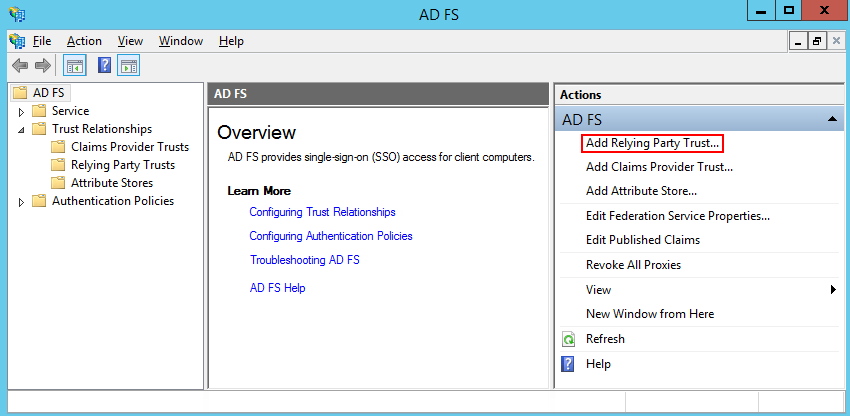
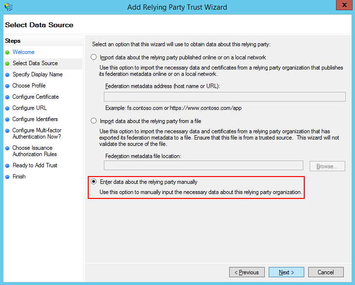
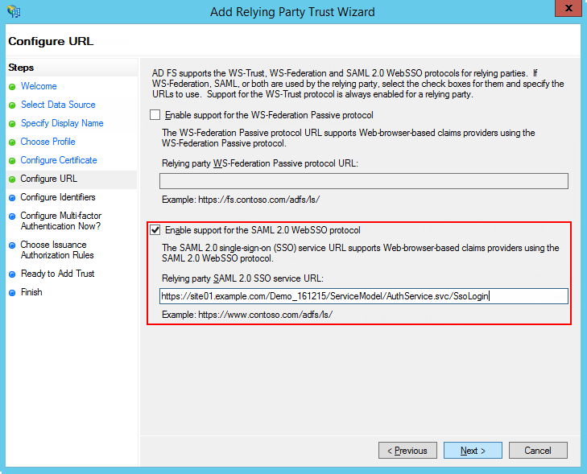
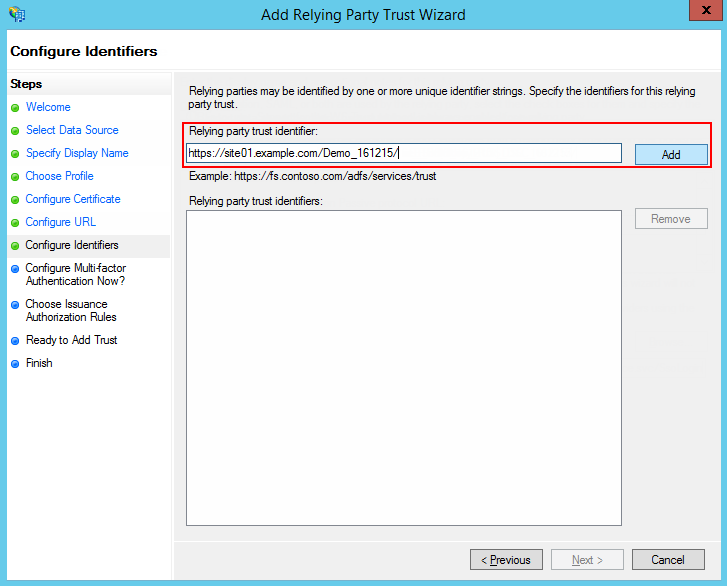
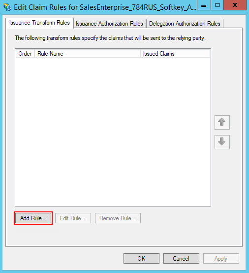
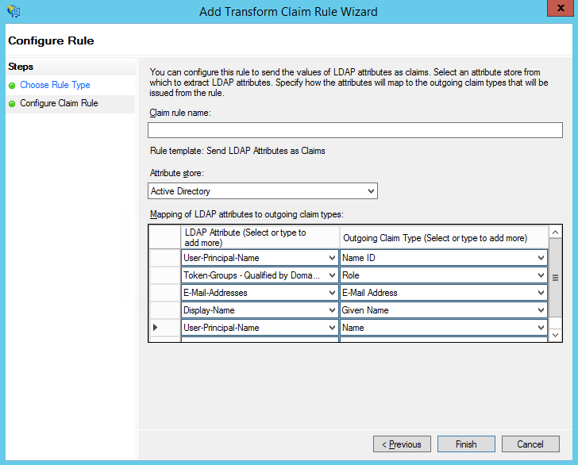
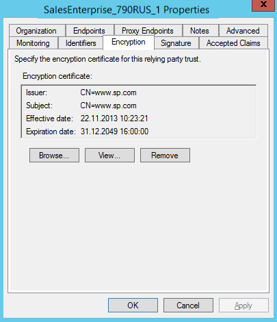
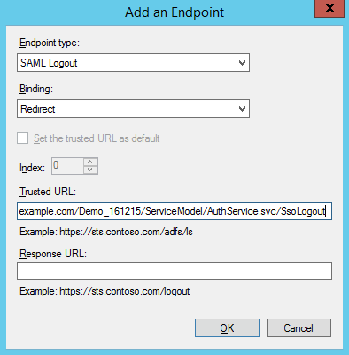
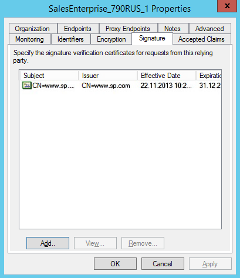
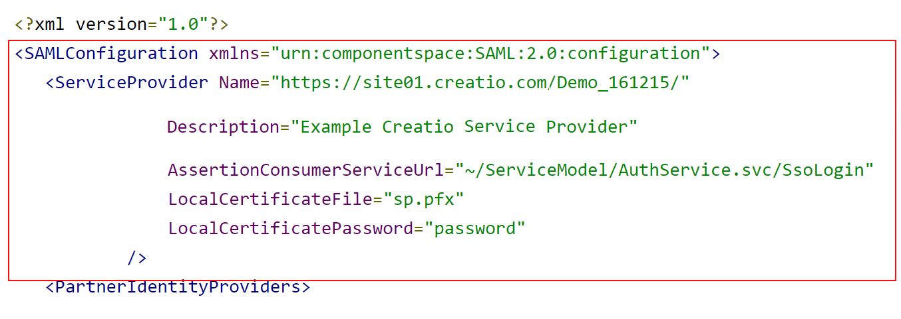

Вы можете настроить интеграцию Creatio c Active Directory Federation Services (ADFS), чтобы с ее помощью управлять возможностью единого входа для всех пользователей системы. Для этого нужно выполнить ряд настроек как на стороне ADFS, так и на стороне Creatio.
Выполнить настройки на стороне ADFS
-
Добавьте в ADFS нового поставщика ресурсов (Relying Party Trusts) (Рис. 1).
Рис. 1 — Добавление нового поставщика ресурсов -
Выберите опцию ручного ввода данных (“Enter data about the relying party manually”), как показано на Рис. 2.
Рис. 2 — Выбор опции ручного ввода данных о поставщике ресусов -
В поле Отображаемое имя (“Display name”) введите название Relying Party. Имя необходимо только для упорядоченного ведения списка доверенных приложений в ADFS.
-
Оставьте профиль “AD FS Profile”, выбранный по умолчанию. Нажмите кнопку Далее (“Next”).
-
На шаге выбора сертификата нажмите кнопку Далее (“Next”).
-
Включите поддержку протокола SAML 2.0. Укажите адрес сайта, добавьте к нему “/ServiceModel/AuthService.svc/SsoLogin” (Рис. 3).
Рис. 3 — Включение поддержки протокола SAML 2.0 -
В настройках идентификаторов укажите полный адрес сайта и нажмите кнопку Добавить (“Add”) как показано на Рис. 4.
Рис. 4 — Указание идентификатора -
Значения остальных параметров настройте в соответствии с требованиями безопасности вашей организации. Для тестового использования эти настройки можно оставить по умолчанию.
-
Нажмите Завершить (“Finish”). В открывшемся окне по кнопке Добавить правило (“Add Rule”) добавьте новое правило формирования SAML Assertion в SAML Response (Рис. 5).
Рис. 5 — Добавление правила -
На первом шаге добавления правила оставьте настройку, выбранную по умолчанию, и нажмите кнопку Далее (“Next”). Установите набор параметров, которые будут получены из данных пользователя (Рис. 6). В указанном примере в SAML Assertion будет передаваться имя (“Name”) пользователя и список групп домена, в которые он входит.
Рис. 6 — Установка параметров правила -
Нажмите кнопку Сохранить (“Save”).
-
Откройте настройки созданного поставщика ресурсов “Trusted Relay” и на вкладке с расширенными настройками (“Advanced”) укажите шифрование SHA-1 согласно алгоритму сертификата сайта.
-
Для настройки шифрования SAML-пакета на вкладке с настройками шифрования (“Encryption”) добавьте публичный ключ сертификата (Рис. 7).
Рис. 7 — Добавление публичного ключа -
На вкладке Конечные точки (“Endpoints”) добавьте конечную точку (“Logout endpoint”), и установите такие параметры (Рис. 8):
-
Endpoint type: SAML Logout.
-
Binding: Redirect.
-
Trusted URL: https://site01.creatio.com/Demo_161215/ServiceModel/AuthService.svc/SsoLogout.
Рис. 8 — Установка параметров конечной точки
-
-
На вкладке Подпись (“Signature”) добавьте сертификат для подписывания (“Logout Request”) как показано на Рис. 9.
Рис. 9 — Добавление сертификата
Выполнить настройки на стороне Creatio
Если вы используете Creatio cloud, то подготовьте информацию для настройки по инструкции ниже и обратитесь в службу поддержки Creatio для применения настроек на сайте.
Ниже приведена инструкция по настройке единого входа для пользователей Creatio on-site. Настоятельно рекомендуем предоставить службе поддержки временный доступ к конфигурации Creatio, либо производить эту настройку под руководством службы технической поддержки.
Чтобы выполнить настройку на стороне Creatio, необходимо выполнить следующие настройки в конфигурационных файлах:
- Внести настройки SAML-провайдера.
- Настроить параметры SSO-аутентификации в Creatio.
- Проверить базовые сценарии SSO.
- Настроить Just-In-Time User Provisioning (JIT).
- Включить использование SSO по умолчанию.
Настройки для приложения на .NET Framework и приложения на .NET Core имеют ряд различий, которые ниже будут рассмотрены подробнее.
.NET Framework
- Заполните настройки SAML-провайдера, указав данные SAML-провайдера идентификации в saml.config.
-
В параметре Name укажите FQDN вашего сайта.
- В секции Partner Identity Provider укажите настройки со стороны IdP. Эти настройки можно посмотреть в файле метаданных.
- WantAssertionSigned="false" — если не будет использоваться сертификат шифрования при обмене SALM Assertion.
- SingleSignOnServiceUrl — URL сервиса единого входа провайдера. Для ADFS, как правило, это: https://adfs01.mysite.com/adfs/ls.
- SingleLogoutServiceUrl — URL сервиса единого входа провайдера. Для ADFS, как правило, это: https://adfs01.mysite.com/adfs/ls.
- PartnerCertificateFile — путь к сертификату безопасности в формате .*cer в файловой системе сервера относительно корня приложения Creatio. Нужно задавать, если WantAssertionSigned="true".
- SignLogoutRequest="true" — важно указывать для ADFS, поскольку подписывание LogoutRequest обязательно. Если установлено значение “true”, то необходимо указать сертификат для формирования подписи в параметре LocalCertificateFile.
- SignLogoutResponse="true" — важно указывать для ADFS, поскольку подписывание LogoutResponse обязательно. Если установлено значение “true”, то необходимо указать сертификат для формирования подписи в параметре LocalCertificateFile.
- OverridePendingAuthnRequest="true" — опция, при включении которой не будет выполняться валидация на соответствие ответа IdP ранее созданным Auth Request.
Пример saml.config для ADFS:
Если включен флаг SignLogoutRequest или SignLogoutResponse, то добавьте в файловую систему, в которой находится приложение Creatio, приватный ключ сертификата шифрования в формате .*pfx. Укажите путь к файлу, а также пароль в файлах конфигурации saml.config и убедитесь, что пользователь, под которым запущено приложение, имеет права на чтение файла. Важно, чтобы сертификат был физически добавлен в корневую папку сайта и в папку Terrasoft.WebApp.
Рис. 10 — Настройка шифрования SAML-пакета
-
- Включите использование SSO-провайдера в Creatio. После указания настроек SAML-провайдера необходимо включить использование SAML SSO в Creatio. Для этого внесите необходимые настройки в web.config в корневой папке сайта:
- Включите использование SSO Auth-провайдеров при выполнении авторизации в Creatio:
- SsoAuthProvider — провайдер входа в основное приложение.
- SSPSsoAuthProvider — провайдер входа на портал.
Указывать можно оба провайдера или только один, который нужен в конкретном случае.
-
Укажите, какой из провайдеров идентификации, указанных в saml.config, нужно использовать по умолчанию в Service Provider initiated SSO-сценариях. В web.config App Loader задайте параметр PartnerIdP значением из строки Issuer URL в saml.config, например:
- Включите использование SSO Auth-провайдеров при выполнении авторизации в Creatio:
-
Проверьте базовый сценарий Identity Provider (IdP) initiated SSO, чтобы убедиться в корректности настроек:
-
Переход на страницу доверенных приложений IdP (ссылка по умолчанию: https://sts.contoso.com/adfs/ls/idpinitiatedsignon.aspx).
-
Выполнение авторизации.
-
Переход на Creatio c результатом авторизации на IdP.
До включения провайдера SSO на стороне Creatio по умолчанию используйте для проверки корректности настроек IdP initiated сценарий. До выполнения проверки убедитесь, что в Creatio содержится активная учетная запись, логин которой совпадает с NameId, передаваемым Identity Provider. В противном случае процесс SSO настройки не будет успешно завершен, поскольку не удастся сопоставить пользователя из домена с пользователем в Creatio. Как только вход через SSO будет выполнен успешно, перейдите к дальнейшим настройкам.
-
- Настройте Just-In-Time User Provisioning (JIT). Функциональность Just-In-Time User Provisioning дополняет технологию единого входа. Она позволяет не только создать пользователя при первом входе в приложение, но и при каждом входе обновлять данные на странице контакта данными, полученными от провайдера идентификации. Подробнее читайте в статье Настроить Just-In-Time User Provisioning.
- В web.config в корневой папке приложения добавьте настройки для JIT.
Тип пользователя определяется страницей, с которой им был выполнен вход в систему. Если для входа используется сценарий Identity Provider initiated, то необходимо явно указать значение DefUserType:
-
General — обычный пользователь.
-
SSP — пользователь портала.
-
- Настройте сопоставление полей из SAML Assertion с колонками в Creatio в справочнике Преобразователь SAML атрибута в название поля контакта. Это необходимо для корректного заполнения полей контакта при создании нового пользователя с помощью Just-In-Time User Provisioning. Если поле пусто или отсутствует в данных провайдера идентификации, оно может быть заполнено значением, указанным в поле Значение по умолчанию справочника. При следующем входе пользователя поля контакта, указанные в справочнике, будут заполнены значением, полученным из провайдера, или актуальным значением по умолчанию.
- В web.config в корневой папке приложения добавьте настройки для JIT.
-
Включите использование SSO-провайдера по умолчанию при входе на сайт. Рекомендуем выполнять действие только в случае успешного выполнения предыдущих шагов и проверки корректности работы. После успешного выполнения этого шага будет доступен для использования Service Provider (SP) initiated SSO.
Стандартный сценарий Service Provider (SP) initiated:
- Переход на Creatio, у пользователя нет активной сессии на сайте.
- Переадресация на IdP, выполнение авторизации.
- Переход на Creatio c результатом авторизации из IdP.
Для включения провайдера SSO по умолчанию:
- Укажите в корневом web.config ресурс по умолчанию NuiLogin.aspx?use_sso=true.
- Установите отправку к провайдеру идентификации при переходе в корень сайта в корневом web.config:
- Включите Single Log Out в web.config в папке Terrasoft.WebApp:
- Укажите в web.config в папке Terrasoft.WebApp ресурс для перенаправления при истечении активной сессии:
- Для использования технологии единого входа в мобильном приложении установите признак Значение по умолчанию в системной настройке “Использовать SSO в мобильном приложении” (код “MobileUseSSO”).
.Net Core
- Заполните настройки SAML-провайдера, указав данные SAML-провайдера идентификации в saml.json.
-
В параметре Name укажите FQDN вашего сайта.
- В секции Partner Identity Provider укажите настройки со стороны IdP. Эти настройки можно посмотреть в файле метаданных.
- WantAssertionSigned — укажите “false”, если не будет использоваться сертификат шифрования при обмене SALM Assertion.
- SingleSignOnServiceUrl — URL сервиса единого входа провайдера. Для ADFS, как правило, это: https://adfs01.mysite.com/adfs/ls.
- SingleLogoutServiceUrl — URL сервиса единого входа провайдера. Для ADFS, как правило, это: https://adfs01.mysite.com/adfs/ls.
- PartnerCertificates — путь к сертификату безопасности в формате .*cer в файловой системе сервера относительно корня приложения Creatio. Нужно задавать, если WantAssertionSigned="true".
- SignLogoutRequest – укажите “true” для ADFS, поскольку подписывание LogoutRequest обязательно. Если установлено значение “true”, то необходимо указать сертификат для формирования подписи в параметре LocalCertificateFile.
- SignLogoutResponse — укажите “true” для ADFS, поскольку подписывание LogoutResponse обязательно. Если установлено значение “true”, то необходимо указать сертификат для формирования подписи в параметре LocalCertificateFile.
- WantAssertionSigned — укажите “false”, если не будет использоваться сертификат шифрования при обмене SALM Assertion.
-
- Если включен флаг SignLogoutRequest или SignLogoutResponse, то добавьте в файловую систему, в которой находится приложение Creatio, приватный ключ сертификата шифрования в формате .*pfx. Укажите путь к файлу, а также пароль в файле конфигурации saml.json, и убедитесь, что пользователь, под которым запущено приложение, имеет права на чтение файла. Важно, чтобы сертификат был физически добавлен в корневую папку сайта и в папку Terrasoft.WebApp.
- Включите использование SSO-провайдера в Creatio. После указания настроек SAML-провайдера необходимо включить использование SAML SSO в Creatio. Для этого внесите необходимые настройки в Terrasoft.WebHost.dll.config в корневой папке сайта:
- Включите использование SSO Auth-провайдеров при выполнении авторизации в Creatio:
- SsoAuthProvider — провайдер входа в основное приложение.
- SSPSsoAuthProvider — провайдер входа на портал.
Указывать можно оба провайдера или только один, который нужен в конкретном случае.
-
Укажите, какой из провайдеров идентификации, указанных в saml.json, нужно использовать по умолчанию в Service Provider initiated SSO-сценариях. В Terrasoft.WebHost.dll.config задайте параметр PartnerIdP значением из строки Issuer URL в saml.json, например:
- Включите использование SSO Auth-провайдеров при выполнении авторизации в Creatio:
-
Проверьте базовый сценарий Identity Provider (IdP) initiated SSO, чтобы убедиться в корректности настроек:
-
Переход на страницу доверенных приложений IdP (ссылка по умолчанию: https://sts.contoso.com/adfs/ls/idpinitiatedsignon.aspx).
-
Выполнение авторизации.
-
Переход на Creatio c результатом авторизации на IdP.
До включения провайдера SSO на стороне Creatio по умолчанию используйте для проверки корректности настроек IdP initiated сценарий. До выполнения проверки убедитесь, что в Creatio содержится активная учетная запись, логин которой совпадает с NameId, передаваемым Identity Provider. В противном случае процесс SSO настройки не будет успешно завершен, поскольку не удастся сопоставить пользователя из домена с пользователем в Creatio. Как только вход через SSO будет выполнен успешно, перейдите к дальнейшим настройкам.
-
- Настройте Just-In-Time User Provisioning (JIT). Функциональность Just-In-Time User Provisioning дополняет технологию единого входа. Она позволяет не только создать пользователя при первом входе в приложение, но и при каждом входе обновлять данные на странице контакта данными, полученными от провайдера идентификации. Подробнее читайте в статье Настроить Just-In-Time User Provisioning.
- В Terrasoft.WebHost.dll.config в корневой папке приложения добавьте настройки для JIT (включается для пользователей системы в настройках SsoAuthProvider и для пользователей портала в настройках SSPSsoAuthProvider):
Тип пользователя определяется страницей, с которой им был выполнен вход в систему. Если для входа используется сценарий Identity Provider initiated, то необходимо явно указать значение DefUserType:
-
General — обычный пользователь.
-
SSP — пользователь портала.
-
- Настройте сопоставление полей из SAML Assertion с колонками в Creatio в справочнике Преобразователь SAML атрибута в название поля контакта. Это необходимо для корректного заполнения полей контакта при создании нового пользователя с помощью Just-In-Time User Provisioning. Если поле пусто или отсутствует в данных провайдера идентификации, оно может быть заполнено значением, указанным в поле Значение по умолчанию справочника. При следующем входе пользователя поля контакта, указанные в справочнике, будут заполнены значением, полученным из провайдера, или актуальным значением по умолчанию.
- В Terrasoft.WebHost.dll.config в корневой папке приложения добавьте настройки для JIT (включается для пользователей системы в настройках SsoAuthProvider и для пользователей портала в настройках SSPSsoAuthProvider):
-
Включите использование SSO-провайдера по умолчанию при входе на сайт. Рекомендуем выполнять действие только в случае успешного выполнения предыдущих шагов и проверки корректности работы. После успешного выполнения этого шага будет доступен для использования Service Provider (SP) initiated SSO.
Стандартный сценарий Service Provider (SP) initiated:
- Переход на Creatio, у пользователя нет активной сессии на сайте.
- Переадресация на IdP, выполнение авторизации.
- Переход на Creatio c результатом авторизации из IdP.
Для включения провайдера SSO по умолчанию:
- Укажите в файле saml.json UseSsoByDefault": "true".
- Установите отправку к провайдеру идентификации при переходе в корень сайта в Terrasoft.WebHost.dll.config:
- Включите Single Log Out в Terrasoft.WebHost.dll.config:
- Укажите в Terrasoft.WebHost.dll.config ресурс для перенаправления при истечении активной сессии:
- Для использования технологии единого входа в мобильном приложении установите признак Значение по умолчанию в системной настройке “Использовать SSO в мобильном приложении” (код “MobileUseSSO”).